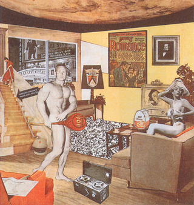
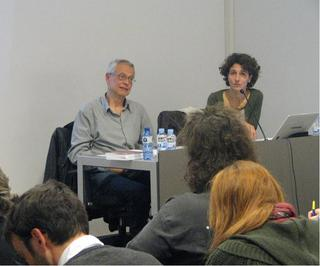
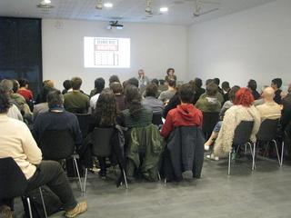
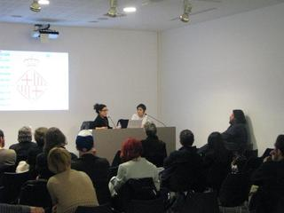

Al febrer vam començar el Laboratori Intercanvis, que ha continuat durant el mes de març amb un bloc de sessions els dies 6, 7 i 8 de març, i un tercer i últim bloc els dies 20, 21 i 22 de març.
Tot seguit us fem arribar un resum de les segones sessions, destacant els inputs més rellevants d’aquests debats, xerrades i actes performatius que aporten una diversitat de lectures i visions sobre les relacions entre art, treball, objecte i economia, i que s’incorporaran en el discurs del projecte “Archivo F.X.: D’economia zero”, en el marc del qual també presentarem l’exposició “Economia: Picasso”.

Richard Hamilton – Just what it that made yesterday’s homes so different, so appealing? – 1992 – Impressió làser a color – 26 x 25,1 cm – Metropolitan Museum, New York – © Richard Hamilton, VEGAP, Barcelona 2011
El productor com a productor
Joaquín Vázquez, membre de BNV produccions, ha exposat el rodatge de més de vint anys d’aquest dispositiu de producció i intermediació cultural, creat per accionar el pensament crític i generar noves maneres de fer en el teixit creatiu.
A diferència del que passa en altres disciplines artístiques, la figura del productor no és reconeguda en el món de l’art, ni en l’època de la reproducció tècnica, tot i que l’obra de la majoria dels artistes contemporanis exigeix sistemes de producció en què intervenen multitud d’oficis.
A dia d’avui no s’han democratitzat els processos de producció, distribució i exhibició perquè ni l’artista, ni el museu ni la galeria ni el comissari ni cap altre dels operadors que intervenen en la realització, custòdia, venda o exhibició de l’obra d’art, no estan interessats en fer-ho, ja que això significaria aproximar, i fer propera una imatge és també modificar la jerarquia des de la qual ha estat escollida.
L’important segueix sent l’“artisticitat” dels objectes que s’exhibeixen, sense valorar ni reconèixer la interacció del grup que els produeix. Però fins a quin punt el model que havia estat dissenyat per ajudar a revitalitzar i consolidar els sectors que integren la indústria cultural no és avui dia una pura il·lusió?
El combat del pensament
Marina Garcés i Santiago López Petit han presentat Espai en blanc, una aposta col·lectiva per promoure el combat del pensament i replantejar-se la possibilitat d’abandonar l’arbitrarietat dels mercats i escapar de la presó de deutes que envolta les nostres existències.
Com a exemple van presentar imatges sobre les reivindicacions que van tenir lloc al voltant de l’any 2000 a Barcelona. Els missatges inclosos per Espai en blanc resaven “Diners gratis”, “Pasta ja”, “No volem treball, volem diners” o “El treball, com més lluny millor”.

Marina Garcés i Santiago López Petit durant la sessió d’Espai en blanc
L’arribada de la crisi permet avançar cap a un nou contracte social: el dret o no a participar en la mobilització global. I, en aquest context, apareixen malalties indefinides per fer front a la mobilització global, com el malestar social. El moviment del 15M és un exemple.
I aquest concepte de el “full”, d’”espai en blanc” que proposen s’ha concebut com una eina des de la qual assajar la situació actual.
Casa de subhastes. Desestocatge d’art. Lots
El Colectivo Todoazen ens ha fet una reflexió sobre el mercat i el valor de l’art prenent com a marc les cases de subhastes dins el mercat de l’art, i el component simbòlic i econòmic que s’amaga després de cadascuna de les licitacions. Per demostrar-ho, el col·lectiu ens ha exposat una sèrie de lots per tal de que el públic mediti quin hauria de ser el seu preu.
Per la seva especial caracterització com a zones de frontera entre el mercat i el gust, entre la sensibilitat i la riquesa, entre l’economia i l’art, les subhastes són narracions que més enllà de la seva estètica realista pertanyen al simbolisme propi de les avantguardes del segle XX. Els preus assolits construeixen el valor de l’art, de manera que les subhastes d’art funcionen com un ritual de legitimació de la propietat privada.
Noranta metres quadrats
Bulegoa z/b és una oficina d’art i coneixement bilbaïna. Conviden a la investigació, al diàleg i a la reflexió mitjançant tallers, seminaris, projeccions, presentacions i altres activitats. Com gestionar els recursos de què disposen ha estat un dels punts principals a tractar. Aquesta oficina neix per fer alguna cosa diferent al que s’està duent a terme institucionalment.
L’economia ocupa gran part de les seves converses com a entitat, ja que han de decidir com gestionar els recursos econòmics, provinents exclusivament d’ajuts públics, per treure’n el màxim partit possible. Es serveixen d’aquesta presentació com a moment excepcional en què pensar-se a si mateixes.

Seminari de Bulegoa z/b
Cos contra Capital: un musical flamenc contra el sistema financer
Flo6×8 és un col·lectiu nascut a Sevilla que ens va il·lustrar sobre la seva lluita contra el capitalisme a través de performances i accions reivindicatives que tenen el flamenc com a protagonista. Aquest col·lectiu, que va néixer a partir de la caiguda de Lehman Brothers, realitza des de balls flamencs protagonitzats per un sol bailaor fins performances col·lectives, passant per cants nocturns individuals dedicats a les càmeres de seguretat o cants individuals en ple horari d’oficina.
Els seus objectius són expressar-se i manifestar descontentament respecte a la situació econòmica, no només en aquests temps de crisi, sinó durant els anys que els han precedit. Busquen fer visibles els responsables del captiveri de la banca i denunciar la situació de dependència que existeix del ciutadà respecte als bancs mitjançant el flamenc i la força del cos.
Redacció del museu
Enllaços relacionats
Laboratori Intercanvis

")
")
")